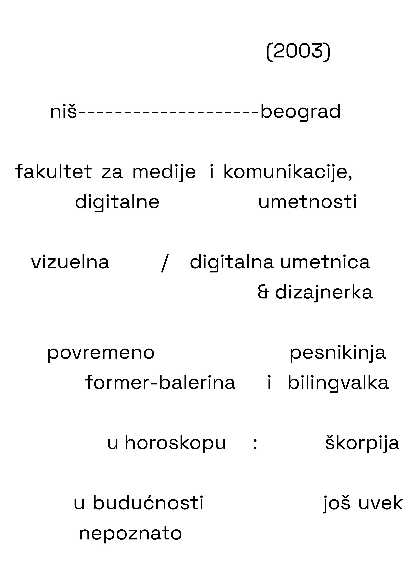
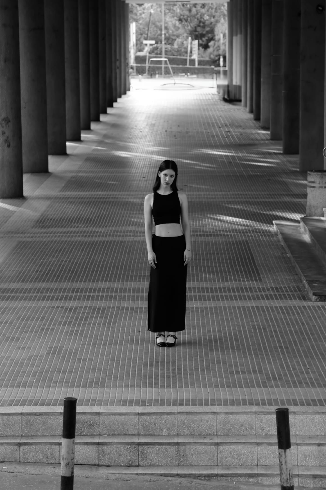

stanchuli is a visual artist who combines analog and digital techniques to create introspective as well as socially engaged art.
Her work is characterized by elements of documentation, diary-like form, experimentation, and post-digital poetics. The themes she explores include shame, empathy, identity, gender, memory, and family relationships, expressed through text, video, publications, and installations.